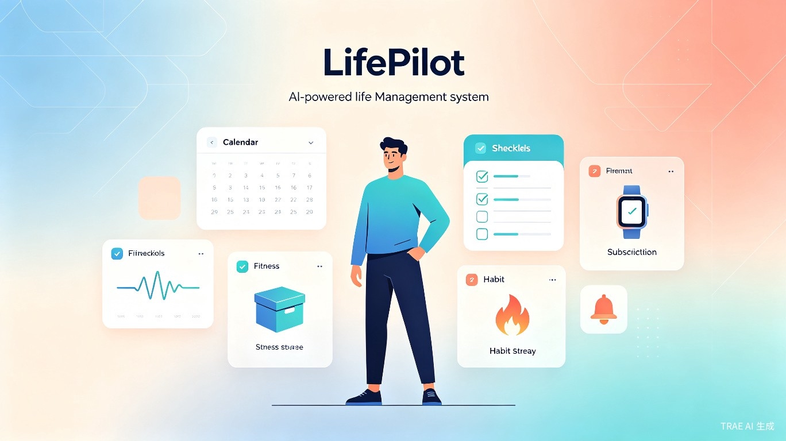
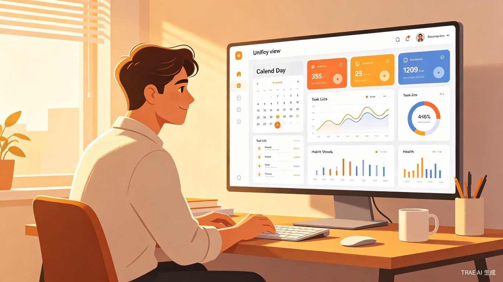
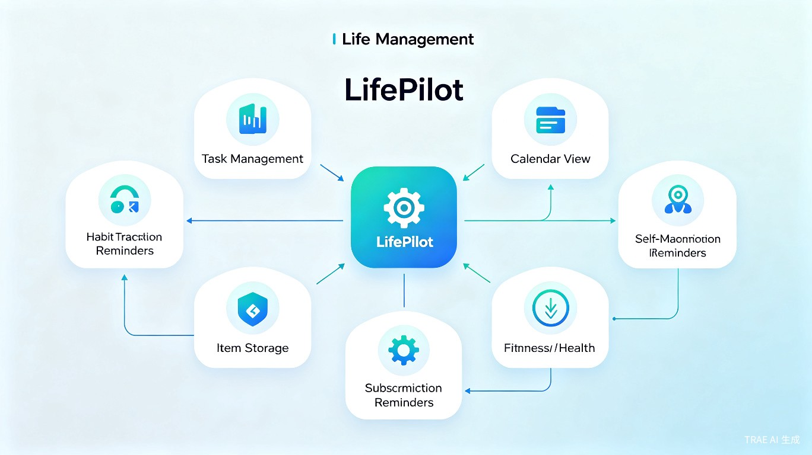

LifePilot — 你的第二大脑，人生的飞行仪表盘
痛点：现代人的生活碎片化严重——待办事项散落在备忘录、日历、健身 App、记账软件等十几个应用中，信息孤岛导致遗忘、重复和焦虑。没有一个地方能让你一眼看清生活的全貌。
LifePilot 是一款AI 驱动的全场景人生管理系统，旨在将个人生活中最核心的六大管理需求整合到一个统一的平台中。它不仅仅是一个 TodoList 或习惯打卡工具，而是一个覆盖「任务-习惯-日程-订阅-物品-健康」全维度的个人操作系统。
通过 AI 智能分析用户的全模块数据，LifePilot 能自动生成周报、月报，提供个性化的生活节奏优化建议，帮助用户从「被动应对」转变为「主动规划」自己的人生。
产品形态：跨平台 Web 应用（支持 PWA 离线使用），后续可扩展为移动端 App 和桌面客户端。

面向追求高效与自律的每一个人
大学生 / 研究生
需要管理课业、社团、实习、考试复习计划，同时养成良好作息和学习习惯。
职场新人
面对多线程工作任务、各种订阅服务、租房物品管理，需要一个统一入口来掌控生活。
健身 / 减肥人群
需要制定和跟踪健身计划、记录体重变化、管理饮食和运动习惯，渴望数据驱动的自我管理。
家庭管理者
需要管理家庭物品收纳、全家订阅服务续费、家庭成员的健康数据和日程安排。
自我提升爱好者
热衷于量化自我（Quantified Self），希望用数据追踪和分析来优化生活的方方面面。
ADHD / 注意力困难者
需要外部结构化工具来帮助记忆、规划和执行日常事务，减少认知负荷。
覆盖日常生活的每一个关键时刻

典型一天：早上 7:00 打开 LifePilot，全景日历显示今天有 3 个会议、2 个待办截止、1 个健身计划、Netflix 月度扣费提醒。AI 助手已经根据你的习惯数据，建议将晨跑安排在 7:30，并在 9:00 会议前预留 15 分钟回顾材料。物品收纳模块提醒你：上周借给同事的数据线还没归还。
七大核心模块，构建完整的人生管理体系
1. 智能任务管理 — 不只是 TodoList
- 多层级任务体系：支持项目 → 阶段 → 任务 → 子任务的四层拆解，让复杂目标变得清晰可控
- AI 智能拆解：输入模糊目标（如"准备英语六级"），AI 自动拆解为可执行的每日学习计划
- 优先级矩阵：基于艾森豪威尔矩阵（紧急/重要），自动建议任务优先级
- 番茄钟集成：内置 25 分钟专注计时器，自动记录专注时长和任务完成效率
- 智能提醒：根据任务截止日期和预估耗时，在最佳时机推送提醒
2. 习惯养成追踪 — 让好习惯成为本能
- 自定义习惯模板：预设常见习惯（早起、阅读、冥想、喝水等），也支持完全自定义
- 连续打卡与热力图：GitHub 风格的贡献热力图，直观展示习惯坚持情况
- 智能奖励机制：达到里程碑自动解锁成就徽章，利用游戏化心理激励坚持
- 习惯关联分析：AI 分析习惯之间的关联性（如"早起"和"晨跑"的正相关性），给出优化建议
- 灵活周期设置：支持每日、每周、每月、自定义间隔等多种频率
3. 全景日历 — 一屏纵览全部生活安排
- 多维度视图：月视图、周视图、日视图自由切换，支持拖拽排程
- 统一数据源：任务、习惯、事件、订阅提醒、健身计划全部汇聚在同一时间线上
- AI 日程优化：智能检测时间冲突，建议最优安排方案
- 时间块管理：支持为特定任务划定专属时间块，减少上下文切换
- 多日历叠加：工作、生活、学习等不同维度可分层显示和筛选
4. 订阅提醒中心 — 再也不会忘记续费或取消
- 订阅全记录：录入所有订阅服务（视频、音乐、云存储、保险、会员等），记录费用和周期
- 智能续费提醒：在续费日前 N 天推送提醒，避免意外扣费
- 年度支出汇总：自动统计订阅类年度总支出，帮你发现"隐形消费"
- 使用价值评估：AI 根据使用频率数据，建议取消低价值订阅
- 家庭订阅管理：支持多人共享订阅的分摊记录
5. 物品收纳管家 — 找东西不再翻箱倒柜
- 物品数字化档案：拍照录入物品信息，标注存放位置（房间-柜子-层架三级定位）
- 快速搜索：支持名称、标签、位置多维度搜索，秒级定位物品
- 过期/保修提醒：食品过期、药品有效期、电器保修期自动提醒
- 借还记录：记录借出物品和归还状态，再也不怕忘记
- 空间利用率分析：AI 分析各收纳空间的使用密度，建议优化方案
6. 自我管理面板 — 身体数据，一目了然
- 计划制定与跟踪：支持自定义减肥计划、健身计划、身高检测计划，设定阶段目标
- 多维度数据记录：体重、身高、BMI、体脂率、腰围、睡眠时长等全面追踪
- 趋势可视化：折线图、柱状图展示数据变化趋势，目标达成进度条
- AI 健康洞察：基于数据趋势给出个性化建议（如"本周体重下降速度过快，建议调整饮食"）
- 计划模板库：预设常见计划模板（如"12周减脂计划"、"30天腹肌挑战"），一键套用
7. AI 生活洞察 — 数据驱动的自我进化
- 周报 / 月报自动生成：汇总全模块数据，生成图文并茂的生活报告
- 生活节奏分析：分析任务完成率、习惯坚持率、时间分配比例，识别效率瓶颈
- 个性化建议：基于用户数据模式，提供针对性的生活优化建议
- 目标达成预测：根据历史数据预测目标达成概率，提前预警偏差
- 跨模块关联：发现不同模块间的隐藏关联（如"睡眠不足导致任务完成率下降"）
系统架构 — 模块化设计，AI 赋能核心

技术栈构想：前端采用 React + TypeScript 构建响应式 SPA，后端使用 Node.js + PostgreSQL，AI 能力通过大语言模型 API 实现。数据可视化使用 ECharts，日历组件基于 FullCalendar 定制开发。整体采用微服务架构，各模块独立部署、数据互通。
AI 能力规划
| AI 能力 | 应用场景 | 实现方式 |
|---|---|---|
| 智能任务拆解 | 将模糊目标转化为可执行步骤 | LLM + 结构化输出 |
| 日程优化建议 | 检测冲突、推荐最优排程 | 规则引擎 + LLM 辅助 |
| 生活报告生成 | 周报/月报自动汇总分析 | 数据聚合 + LLM 文案生成 |
| 健康趋势预测 | 体重/运动数据趋势预测 | 时序分析模型 |
| 跨模块关联发现 | 发现生活习惯间的隐藏关联 | 相关性分析 + LLM 解释 |
| 订阅价值评估 | 建议取消低价值订阅 | 使用频率分析 + LLM 建议 |
为什么 LifePilot 是更好的选择
| 维度 | 传统 TodoList | 习惯打卡 App | 日历应用 | LifePilot |
|---|---|---|---|---|
| 任务管理 | ✅ 基础 | ❌ 无 | ⚠️ 简单 | ✅ AI 增强 |
| 习惯追踪 | ❌ 无 | ✅ 专注 | ❌ 无 | ✅ 关联分析 |
| 日历视图 | ❌ 无 | ❌ 无 | ✅ 专注 | ✅ 多源聚合 |
| 订阅管理 | ❌ 无 | ❌ 无 | ❌ 无 | ✅ 独家 |
| 物品收纳 | ❌ 无 | ❌ 无 | ❌ 无 | ✅ 独家 |
| 自我管理 | ❌ 无 | ⚠️ 部分 | ❌ 无 | ✅ 全面 |
| AI 洞察 | ❌ 无 | ⚠️ 基础 | ❌ 无 | ✅ 跨模块 |
| 数据互通 | ❌ 孤岛 | ❌ 孤岛 | ❌ 孤岛 | ✅ 全打通 |
核心差异化优势：LifePilot 不是在某个垂直领域做到极致，而是打破信息孤岛，通过统一的数据平台和 AI 引擎，实现跨模块的智能联动。用户不需要在 5-6 个 App 之间反复切换，一个 LifePilot 就能管理生活的全部。
让每个人都能成为自己人生的 CEO
减少 App 切换
将分散在十几个 App 中的生活管理需求统一到一个平台
效率提升
AI 智能排程和提醒减少遗忘和重复，提升日常任务完成效率
全景视野
跨模块数据联动，让用户对生活的每一个维度都有清晰认知
商业价值
全球个人效率工具市场规模持续增长，Todoist、Notion、Habitica 等产品验证了用户需求。LifePilot 的差异化定位——全维度人生管理 + AI 赋能——在市场中尚无直接竞品，具备显著的先发优势。商业模式可从免费基础版 + 高级 AI 功能订阅切入。
社会价值
在信息过载的时代，帮助人们重建对生活的掌控感。对于 ADHD 患者、独居青年、职场新人等群体，LifePilot 能有效降低认知负荷，减少因遗忘和混乱带来的焦虑。长远来看，推动社会从"被动应对"到"主动规划"的生活理念转变。
从 MVP 到完整产品的演进路径
Phase 1 — MVP（核心三模块）
实现智能任务管理 + 习惯追踪 + 全景日历三大核心模块，验证产品核心价值和用户需求。支持基础的 AI 任务拆解和日历冲突检测。
Phase 2 — 扩展模块
加入订阅提醒中心和物品收纳管家，完善生活管理场景覆盖。上线 PWA 支持离线使用。
Phase 3 — 自我管理 + AI 洞察
上线自我管理面板（健身/减肥/健康追踪）和 AI 生活洞察引擎，实现跨模块数据联动和智能报告生成。
Phase 4 — 生态扩展
开放 API 接入第三方服务（如 Apple Health、Google Calendar），推出移动端 App，探索社区和分享功能。
LifePilot — 让每一天都有迹可循
一个 App，管理你人生的全部。从今天开始，做人生的 Pilot。